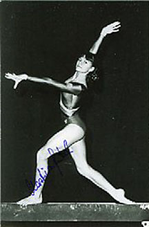

Martina Jentsch (GDR)
1998 Central American Games AA Gold Medalist

Medal Total
Olympic Games: 1
Bronze
World Championships: 2 Bronze
Martina was born on March 22, 1968 and trained at SC Einheit Dresden.
Competition Results
1981
Jr. GDR-BUL Dual Meet: 1st Team, 1st AA
1983
American Cup: 14th AA (prelims)
Intl. Mixed Pairs: 11th Team
1984
Simo Sappinen Memorial International: 1st AA
1985
GDR Championships: 5th V
GDR-HUN Dual Meet: 1st Team, 5th AA
World Championships: 3rd Team, 31st AA (prelims)
1986
Ahoy Cup: 6th AA
CSSR-GDR "B"-HUN Meet: 4th AA
GDR Championships: 3rd AA, 1st V, 1st FX, 4th UB, 5th B
Goodwill Games: 11th AA
Moscow News: 5th AA
1987
DTB Cup: 6th AA, 1st UB
European Championships: 7th AA, 6th FX
Gander Memorial: 6th AA
GDR Championships: 3rd AA
GDR-NOR-SWE Meet: 1st Team, 2nd AA
Moscow News: 12th AA
World Championships: 3rd Team, 7th AA, 7th UB, 7th FX, 8th V
1988
American Cup: 7th AA
GDR Championships: 3rd AA, 3rd B, 6th V, 6th FX
Intl. Mixed Pairs: 4th Team
Olympics: 3rd Team, 87th AA (prelims)
This page was created on September
02, 2006.
© Gymn Forum